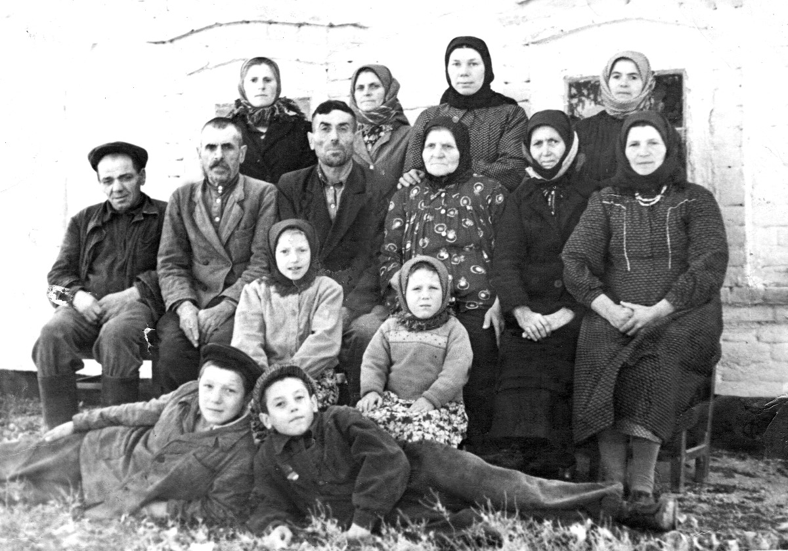

Родилась: 01.06.1918, с. Зеленое (с. Зеленовка)
Умерла: 01.07.1989, с. Зеленое (с. Зеленовка)
Продолжительность жизни: 71
Место жительства: с. Зеленое (с. Зеленовка)
Муж: Сербинов Иван Степанович
Сын: Сербинов Степан Иванович
Сын: Сербинов Григорий Иванович
Сын: Сербинов Анатолий Иванович
Дочь: Киян (Сербинова) Мария Ивановна
Сын: Сербинов Николай Иванович
Дочь: Сербинова Евдокия Ивановна
Баба Настя приехала на родину: около 1956, с. Зеленое (с. Зеленовка). Зеленовка 1956 Первый слева - Анатолий Иванович, сидят первый слева Иван Степанович, третий - муж Домникии Иван, баба Настя и Домникия. Стоят: первая слева - невестка Домникии, жена её сына Карпа Ивановича, Мария Степановна, а третья - Анна Захаровна рядом с Иваном Степановичем лежит сын Домникии, Николай, а над ними слева её же дочь Валентина и сестра Анатолия Ивановича, Евдокия. |